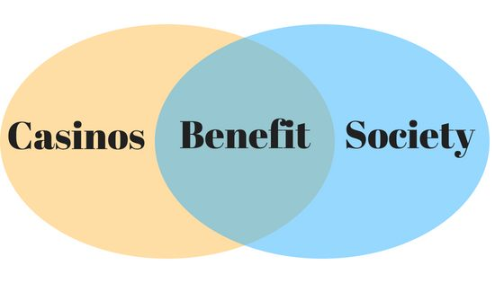
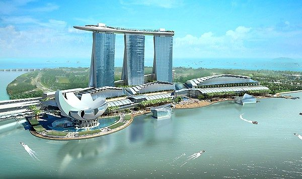

What Casinos Mean To Society?
During high school mathematics we are taught that casino games have a house edge that creates an unbeatable game and an expected monetary loss. This leads to the claim that casinos are out to take as much money as they can from gamblers. Casinos are then framed as a terrible establishment where dreams and bank accounts go to die. It may seem as though casinos have a negative impact on society and its socioeconomic status; however, it is simply an assumption that we have made during our education. Although casinos have a negative expected money return on nearly all their games, there are other significant impacts that casinos have on society. Jobs are created from casinos being built, this is particularly true in rural areas as there is less work opportunity to begin with. Casinos directly improve job opportunity in the local area (although have little effect across the entire state area). Casinos in the United States have an overall direct and indirect benefit to the economy in the area that they are placed. There are also theories that patrons betting in casinos help the government to avoid increasing tax rates by taking the tax directly from the casinos revenue.

Casinos Benefits To Society?
Casinos provide employment for 1.2% of the population in the state of Missouri. In turn, without casinos in Missouri, the unemployment rate would increase 1.2%. In the countryside, casinos open up indirect employment by the demand for things like petrol stations, supermarkets, accommodations and public transport. All these things facilitate the ability for people to come and play at the casino. Casinos in the USA also provide healthcare to their employees, completely covering their health insurance. Benefits of casinos are not limited to United States. In 2010, the IRs (Inland Revenue Authority of Singapore) created 35,000 new jobs. Furthermore, casinos have been around for several hundred years (since 1638) and been successfully implemented in a number of different economies and vastly different cultures. Gaming inside a casino can be fantastic relaxation when played responsibly.
Indirect Benefits Of Casinos?
Casinos directly employ 570,000 people in the USA, and an additional 1.7 million indirectly. Casinos account for more total employment than the airline industry in the USA. They have a $102 billion direct impact on the economy, and an additional $138 billion indirect impact. USA casinos produce 81 billion in revenue, and 38 billion of that revenue goes towards paying tax. This should directly contribute towards reducing tax rates for citizens. And when casinos are placed in regions with less tax, they perform even better for the casino and community. In poor areas, the economic boost and new facilities created from a casino is unignorable. For example, Mississippi now has a 48,000 square foot arena and expo centre. As well as a golf course and tennis courts, a museum and aquarium, expanded library, and airport. All of these things are invaluable to the community and its employment rate. The library is a good example of something that is simply all benefit to society. Other smaller examples of this could include improved drainage system, upgraded supermarkets, better roads and improved efficiency of public transport.

Potential Negative Aspects?
Retail stores opened as businesses by the casino definitely provide competition for other retail stores. This is also true when casinos open restaurants, hotels, and exhibition centers. But this not a valid argument against casinos, since opening any business, whether it is inside a casino or not, attributes to competition. Local business owners may be affected, however it is a trade off as employment rate is also increased in the same area. When looking at it from a purely statistical view, the increased employment rate overcompensates for the potential loss of local businesses. Another argument is that gambling can make people stupid. This is said to occur when, an otherwise perfectly rational citizen, plugs causality into a game of complete chance. Doing this supposedly leads to an illogical and superstitious thinking habit. Gambling addiction is another potential downside that is brought up when casinos are opened. However, there are other factors to consider such as gambling addicts benefiting form a legal and surveyed area so their issue is monitored in a more controlled environment, and there is easier access for them to get help when inside the casino. In the United States there is also a possible correlation with decreased educational institution enrolment and cities that have casinos. This may be due to casinos increasing employment rate in younger citizens that would otherwise be attending university.
USA, Singapore and Macau Casino Comparison?
Singapore’s RWS (Resort World Sentosa) has been winning $7-8 million per day in revenue since it opened in 2010. This is considerable more than the Bellagio or Mirage in Las Vegas. There were surveys conducted in the USA to enquire about residents feelings towards casinos. Over 50% of survey respondents agreed that casinos create a positive impact on their lives. Furthermore, over 75% of them believed it had some positive impact on the economy. Singapore residents also participated a similar in natured survey. These residents reported that they felt their quality of life increased, yet also became more expensive at the same time. And for Macau, it is quite an extreme example. The city has a huge amount of casino gaming revenue, more than double that of Las Vegas. Macau residents did not warm to casinos’ general effects on the city; however, they noticed considerable improvements in environmental factors once Macau’s commercial casino opened. Macau’s gross profit amount in casino gaming is much lower compared with their hotels, restaurants and exhibitions profits combined.

Why Do People Gamble?
Mostly all players choose to play in casinos for entertainment reasons, or for the chance to instantly increase their money. There is a house edge on virtually all casino games, however the less the house edge, the more engaging it is for players. This is particularly true when locals are the main audience. If a slot machine has a higher house edge, its performance will get a bad reputation among the locals, and they will avoid playing it. At places like The Strip in Las Vegas where nearly everyone is a tourist, it becomes less important. There is little to no word of mouth in these areas, except among the small percentage of locals which is not the casinos target market. The casino does offer bets that have only a slight house edge, but they find ways around this to make profit. There are many sucker bets that are thrown in with the more “fair” bets that have a huge house edge. Uninformed or spontaneous gamblers will bet on these, yet it is still there choice to do so. Telling people gambling is a waste of money is like telling a child that their video game is a waste of time. Casino gaming is a form of entertainment that gets a lot of stigma, and for a specific reasons. It is important we separate those reasons from the benefits to society that casinos can provide.
Conclusion
After taking problem gamblers out of the equation, there are mostly positive things to say about casinos providing more economic growth and wellbeing for the concerning societies. The house edge in a casino can be looked as a service fee for gaming entertainment that would otherwise need to be paid for. And what’s even better, is that placing bets at the casino is always optional and can be avoided completely if desired. There are many forms of entertainment in casinos. If you enter a moderately large casino, you can easily see that the establishment encompasses more than just gambling. If people go to the casino for a full holiday package, they are given exactly that. And if people go their for a fancy night, they are given that, which includes spending money. Citizens spending money that they can afford on entertainment that they choose is a fantastic way to enhance the economy in that society.
Bibliography
Do Casinos Benefit Local Economies?. (2015, September 27). Retrieved from https://www.itestcash.com/blogs/news/do-casinos-benefit-local-economies
Eadington, W. R. (1999). The economics of casino gambling. Journal of economic perspectives, 13(3), 173-192.
Essays, UK. (November 2013). Positive And Negative Economic Impacts Of Casino Gaming Tourism Essay. Retrieved from https://www.ukessays.com/essays/tourism/positive-and-negative-economic-impacts-of-casino-gaming-tourism-essay.php?vref=1
Hack, G. (2014, December 16). Casino report sees wide economic benefits from gambling in Missouri. Retrieved from https://www.kansascity.com/news/business/article4535183.html
Horridge, K. (2015, July 29). Gambling And The Law: The Good, The Bad And The Ridiculous. Retrieved from https://www.casino.org/blog/gambling-and-the-law-the-good-the-bad-and-the-ridiculous/
Walker, D. (2014, October 28). Economic benefits of casinos likely to outweigh costs. Retrieved from https://theconversation.com/economic-benefits-of-casinos-likely-to-outweigh-costs-33443
Wikipedia contributors. (2018, July 17). Casino. In Wikipedia, The Free Encyclopedia. Retrieved 04:04, July 18, 2018, from https://en.wikipedia.org/w/index.php?title=Casino&oldid=850655225
Wu, S. T., & Chen, Y. S. (2015). The social, economic, and environmental impacts of casino gambling on the residents of Macau and Singapore. Tourism Management, 48, 285-298.